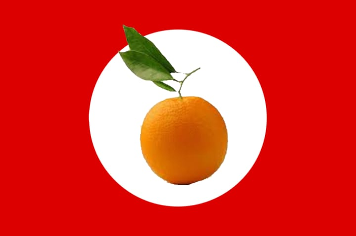

-
DEnis é um típico americano amador de laranjas nascido no Texas em 1945. Ele sofreu muito bullying por conta da associação de seu nome, DEnis, com a palavra "penis". Assombrando-o até o 2° ano do ensino médio, quando se assumiu gay, durando por 7,5 anos essa orientação sexual. Durante estes anos ele não curtiu nem um pouco ficar chupando as bolas dos outros, ainda mais que perdeu muita mulheres bonitas, mas fazer o quê? Não é? Após isto ele ficou de saco cheio e se tornou hetero novamente e construiu uma bela família conservadora, com uma mulher e dois filhos, uma menina, caçula, e outro menino, primogênito.
Sua transição de liberal para conservador não foi fácil, porém algo nunca mudou nele. Seu amor às laranjas! E, com a família estabelecida, com um trabalho chato (porém que paga super bem!) e uma oratória ao estilo gerente de supermercado- e dpois ao melhor modo Führer- ele decidiu fundar o partido Laranzista em 68!
 Bandeira Laranzista
-
O Surgimento

Como dito antes, DEnis fundou o seu partido em 68. Mas... por quê? Ele tem muitas razões plausíveis para esse ato intriciscamente correto, começando por:
Proteção e conservação
Primeira e mais evidente razão para isso é para a consevação e proteção a todos os plantadores de laranjas de seu país, EUA, dado que na época da criação do partido, as laranjas estavam cada vez sendo mais colocadas de lado, sendo trocadas ou por suco de coca(ína), morangos e Bigmac(s)
É com base neste contexto que o DEnis formulou uma de suas mais celébres frases e princípio de todo o seu partido:
"Somos feito de uma coisa só, servimos a um só propósito, somos feitos, portanto, para sermos um só. Assim como milhares de gominhas de laranjas se juntam para formar uma laranja, devemos trabalhar e pensarmos como um só para avançarmos